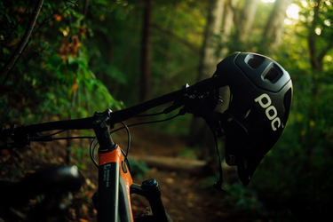
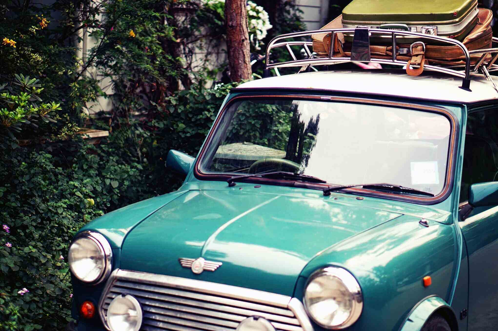

Hobbies
 
I have a lot of hobbies and try to persue them whenever I have spare time. I own a classic Mini Cooper and enjoy working on it and driving on hot sunny days.
I also like to cycle and have just purchased my first ebike! Which is super fun and easy to ride.
Besides that, I also enjoy making and designing models for my 3D printer, I've made a couple so far and hope to make many more things with it. I've always considered myself quite creative and like to draw, paint and design things for my friends.
Sometimes I feel I have too many hobbies, I even keep a trello board for all my personal projects.